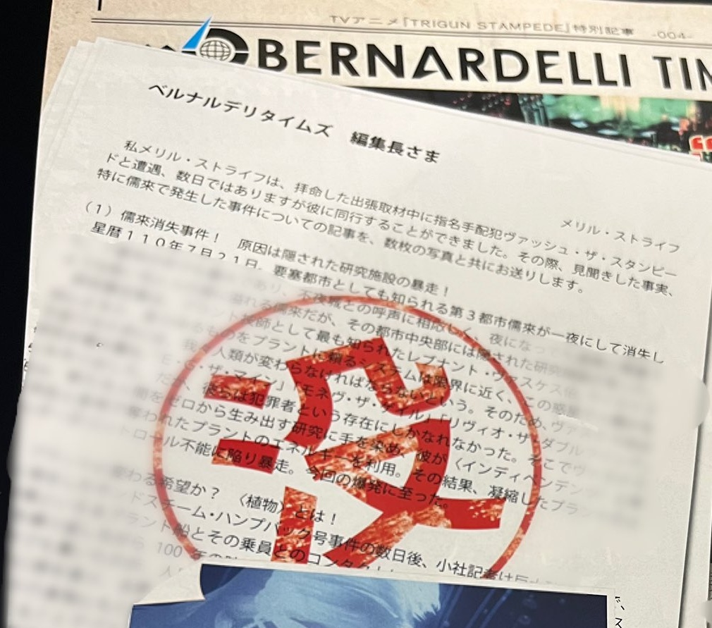

- Request
- Commissioned by xoxo-otome! Thank you! 🤞
- Source Text
- Tweet by the Trigun Stampede official Twitter page on 2023/04/04 promoting the Young King OURs magazine.
- Links
- Original Tweet / Tumblr post by @xoxo-otome (has a bit of additional insight)
TV Anime Trigun Stampede Special Article -004-

To the editor of the Bernardelli Times
Meryl Stryfe
I, Meryl Stryfe, encountered the wanted criminal Vash the Stampede during my appointed trip and, though short, was able to spend a few days with him. Attached is an article I have written of the reality that I observed during that time, especially focusing on the JuLai incident, along with a few photos.
(1) The Disappearance of JuLai—The culprit was the meltdown of a hidden scientific facility!
On Star Date 110, July 21st, the third city JuLai, famous for being a “fortress city,” disappeared in a single night—